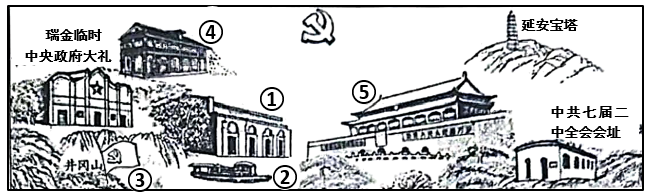
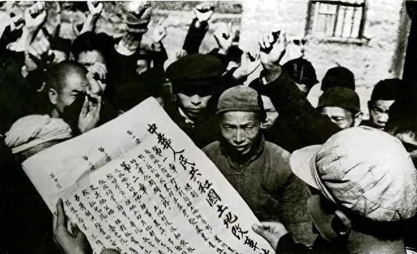
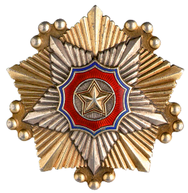
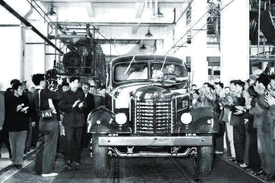
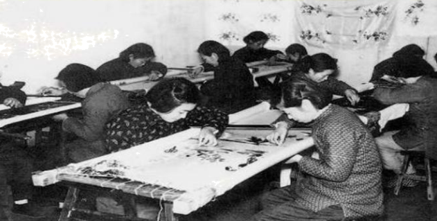
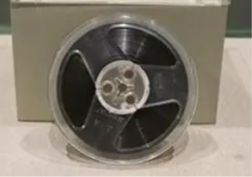
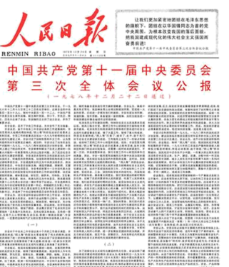
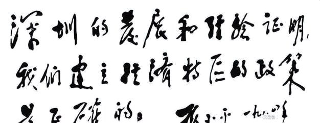
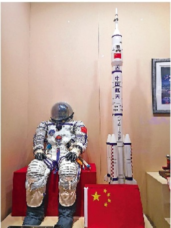

2024年北京中考历史 第22题 解析
22. 用好红色资源 赓续红色血脉
材料一 一位同学参观了中国共产党第一次全国代表大会纪念馆，根据馆中壁画《日出东方》手绘了以下作品。画中红色地标以天安门为中心再现了新民主主义革命时期党的伟大征程。

（1）依据材料一，从①至⑤中任选一处红色地标，写出其反映的重大历史事件及其意义。
材料二 一位同学参观了中国共产党历史展览馆，以下是他拍摄的部分展品。
 |  |  |  |
①《中华人民共和国土地改革法》受到广大农民的拥护（照片） | ②邱少云获授的朝鲜民主主义人民共和国一级国旗勋章 | ③中国第一批解放牌汽车在长春一汽试制成功（照片） | ④苏州刺绣手工业生产合作社的社员在精绣展品（照片） |
 |  |  |  |
⑤毛泽东听过的“东方红一号”卫星播送的《东方红》乐曲磁带 | ⑥《人民日报》刊登的中共十一届三中全会公报 | ⑦邓小平为深圳经济特区的题词 | ⑧神舟九号航天员穿过的舱内宇航服 |
（2）依据材料二，任选两件展品，说明其反映的史事及其联系。（示例组合除外）
示例：⑤⑧
⑤我国成功地发射了第一颗人造地球卫星——东方红一号。
⑧我国实施载人航天工程，取得了伟大成就。
这两项成就都推动了我国航天技术的发展，增强了国防实力，提高了国际地位。
材料三 从党的一大会址到党的各个重要革命根据地，从土地革命、抗日战争、解放战争纪念地点到社会主义革命和建设、改革开放重要纪念场所等，每到一地，重温那一段段峥嵘岁月，回顾党一路走过的艰难历程，灵魂都受到一次震撼，精神都受到一次洗礼。每次都是怀着崇敬之心去，带着许多感悟回。
——习近平《用好红色资源赓续红色血脉努力创造无愧于历史和人民的新业绩》
（3）依据材料三并结合个人对于红色文化资源的参观学习经历，谈谈“用好红色资源，赓续红色血脉”的意义。
【答案】（1）示例：事件：①中共一大；意义：中共一大的召开标志着中国共产党的诞生，是中国历史上开天辟地的大事变，自从有了中国共产党，中国革命的面貌就焕然一新了。
（2）示例：⑥⑦。
⑥1978年，中共十一届三中全会召开，作出实行改革开放的伟大决策。
⑦1980年，中央决定在广东、福建两省兴办深圳、珠海、汕头、厦门4个经济特区。
改革开放和设立经特区促进我国社会经济的快速发展，促进综合国力的提升。
（3）示例：有利于传承中华优秀传统文化，有利于传承革命文化，有利于学习勇于实践探索的开拓精神、顽强拼搏的奋斗精神以及舍生取义的献身精神等。
【解析】
【小问1详解】
事件、意义：本题属于开放性试题，需要从图片中窥知相应的历史事件，以图片①为例，结合所学知识，图片①反映中共一大的召开，中共一大的召开标志着中国共产党的诞生，是中国历史上开天辟地的大事变，自从有了中国共产党，中国革命的面貌就焕然一新了。
【小问2详解】
史事：本题属于开放性试题，可以任选两个有联系的历史事件进行作答，以⑥⑦为例，根据材料“中共十一届三中全会公报”和“深圳经济特区”分析可知分别反映了⑥1978年，中共十一届三中全会召开，作出实行改革开放的伟大决策；⑦1980年，中央决定在广东、福建两省兴办深圳、珠海、汕头、厦门4个经济特区。
联系：结合所学知识，改革开放和设立经济特区促进我国社会经济的快速发展，促进综合国力的提升。
【小问3详解】
意义：本题属于开放性试题，可以从传承文化等角度进行作答，如：有利于传承中华优秀传统文化，有利于传承革命文化，有利于学习勇于实践探索的开拓精神、顽强拼搏的奋斗精神以及舍生取义的献身精神等。